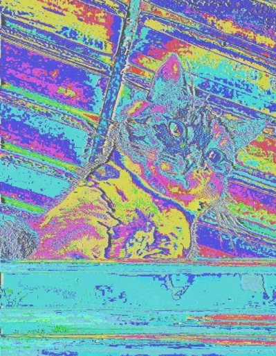
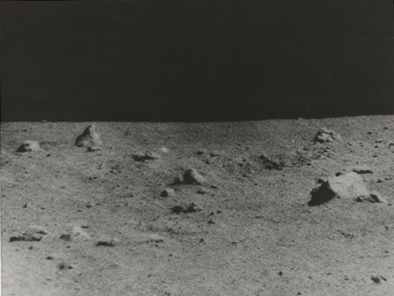
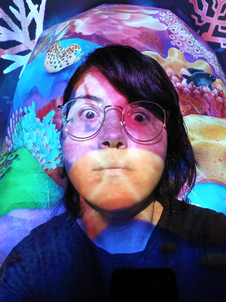
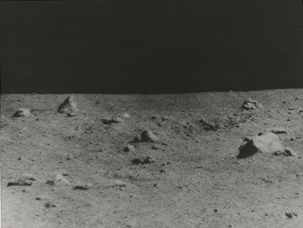
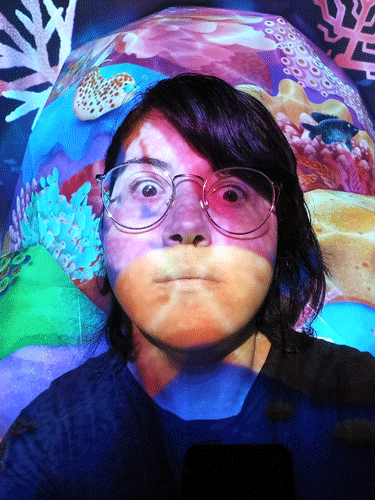

first test at a flashing eye gif

second test - happier with this result


original gif made using photoshop, then uploaded to giphy to add effects
a moment in time||hypertext
narratives||gifs
escape to cat city||my bitsy game
cat facts||twitter bot
home||the start
this is a datamosh that I made using audacity - it features my former cat Meer. this was not part of the the work we were given to do but I thought I would include it anyway.

this is a test .gif made during class in week one
it features a caricature of a cat-man running across a lunar landscape. both images were obtained from the free image gallery on the Met Museum's website.
first test at a flashing eye gif

second test - happier with this result
original gif made using photoshop, then uploaded to giphy to add effects
💩 🔮 👽 🌈
I have also learnt how to add emoji to a websitea moment in time||hypertext
narratives||gifs
escape to cat city||my bitsy game
cat facts||twitter bot
home||the start